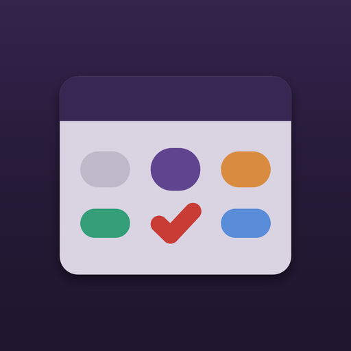
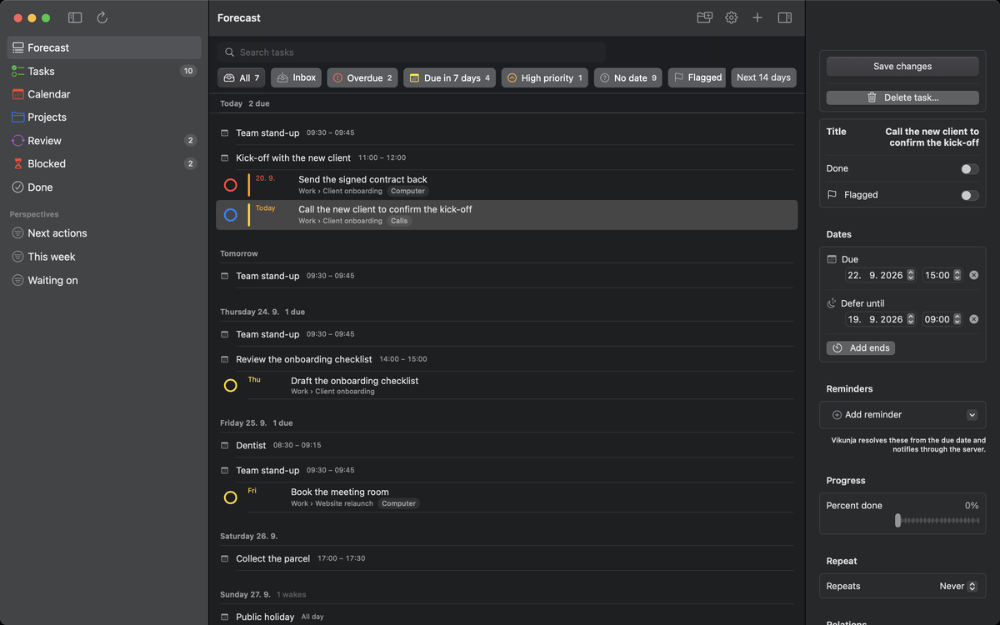
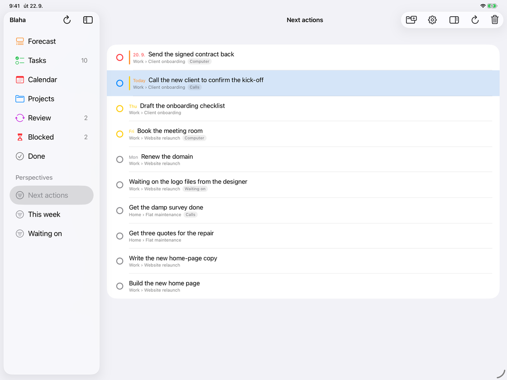
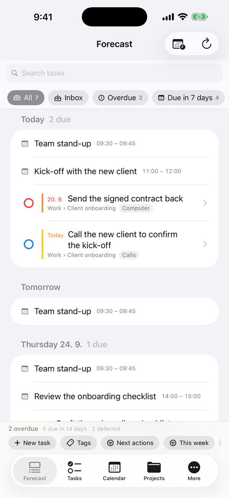

Blaha
Vikunja holds your tasks. Blaha gives them a system — defer dates, review cycles, perspectives of your own — on iPhone, iPad and Mac.
Coming to the App Store
Your tasks stay on your own server. Nothing to sign up for here, and no backend of ours in the middle.

What it does
Forecast
Today and the days ahead, with your calendar events beside the tasks that are due.
Tasks
Everything you could do now. Deferred work is hidden until its date, and the count of what is hidden is always shown.
Calendar
Month, week and day, reading the calendars already on your device.
Projects
Nested projects with their available and deferred work separated. Part of the unlock — every task still names its project everywhere else.
Review
A review cycle per project, so a project cannot quietly go stale.
Perspectives
Saved filters of your own — next actions, this week, waiting on — kept in the sidebar.


What it costs
Blaha is free to use as a full task client: Forecast, Tasks, Calendar, Done, capture, the share extension and the widgets.
A one-time unlock adds the six that turn a list into a system: Projects, Blocked, Review, Perspectives, defer dates and multiple accounts. No subscription — a client for someone else's server has nothing honest to charge rent for.
Everything is open for a 7-day trial from first launch, so the paid layer can be judged before it is bought.
What you need
- iOS or iPadOS 17, or macOS 14, and later.
- A Vikunja server you host, or a Vikunja Cloud account, reachable over HTTPS.
- Or neither: tap Try the demo on the first screen and Blaha runs against sample data held entirely on the device — no server, no account, no network.
Questions
The support page covers connecting, tokens, offline behaviour and the purchase. Anything else goes in the support forum, which is open to everyone.